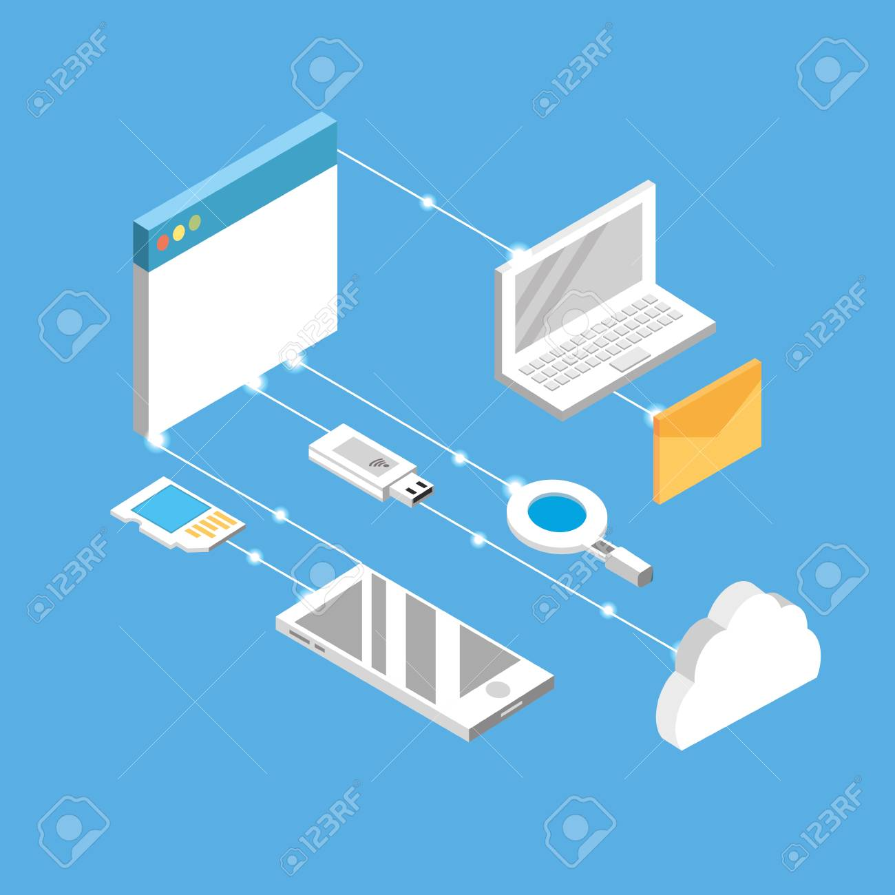
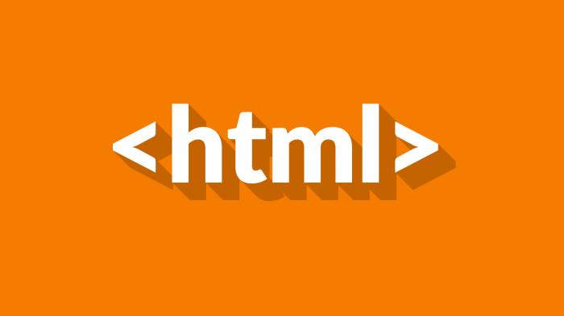

¿Que son las Paginas Web?
Se conoce como página Web, página electrónica o página digital a un documento digital de carácter multimediático (es decir, capaz de incluir audio, video, texto y sus combinaciones), adaptado a los estándares de la World Wide Web (WWW) y a la que se puede acceder a través de un navegador Web y una conexión activa a Internet. Se trata del formato básico de contenidos en la red.
En Internet existen más de mil millones de páginas Web de diversa índole y diverso contenido, provenientes del mundo entero y en los principales idiomas hablados. Esto representa el principal archivo de información de la humanidad que existe actualmente, almacenado a lo largo de miles de servidores a lo largo del planeta, a los que es posible acceder velozmente gracias a un sistema de protocolos de comunicación (HTTP).
En muchos casos, el acceso a una página Web o a sus contenidos puntuales puede estar sometido a prohibiciones, pagos comerciales u otro tipo de métodos de identificación (como el registro on-line).
El contenido de esta inmensa biblioteca virtual no está del todo supervisado, además, y su regulación representa un reto y un debate para las instituciones tradicionales de la humanidad, como la familia, la escuela o incluso las leyes de los países.
Las páginas Web se encuentran programadas en un formato HTML o XHTML, y se caracterizan por su relación entre unas y otras a través de hipervínculos: enlaces hacia contenidos diversos que permiten una lectura compleja, simultánea y diversa, muy distinta a la que podemos hallar en los libros y revistas.
Por último, no es lo mismo hablar de página Web (Webpage) y de sitio Web (Website), ya que estos últimos contienen un número variable de las primeras.
Para que Sirve una Pagina Web
Las páginas Web cumplen básicamente con la tarea de brindar información de cualquier índole y en cualquier estilo o grado de formalidad.
Algunas, al mismo tiempo, permiten distintos grados de interacción entre usuarios o con alguna institución, como son las páginas de foros, servicios de citas o redes sociales, las páginas de compra y venta de bienes, las páginas de consulta o de contacto con empresas, instituciones gubernamentales o con ONGs, e incluso las páginas de soporte técnico especializado.
En principio, las funciones de una página Web son tan amplias como la demanda de los usuarios y la oferta de sus creadores.
Tipos de Paginas Web

Existen dos tipos de paginas web:
Páginas Web estáticas: Operan mediante la descarga de un fichero programado en código HTML, en el que están todas las instrucciones para que el navegador reconstruya la página Web, accediendo a las ubicaciones de sus elementos y siguiendo un orden preconcebido, rígido, que no permite la interacción con el usuario. Este tipo de páginas son meramente informativas, documentales, no interactivas.
Páginas Web dinámicas: A diferencia de las anteriores, las páginas Web dinámicas se generan en el momento mismo del acceso del usuario, empleando para ello algún lenguaje interpretado (como el PHP), lo cual le permite recibir solicitudes del usuario, procesarlas en bases de datos y ofrecer una respuesta acorde a sus requerimientos.
Creacion
Existen diversas maneras de crear paginas web, pero hoy nos centraremos en dos, por WIX y HTML
WIX
Wix.com es una plataforma para el desarrollo web basada en la nube que fue desarrollada y popularizada por la compañía Wix. Permite a los usuarios crear sitios web HTML5 y sitios móviles a través del uso de herramientas de arrastrar y soltar en línea. Los usuarios pueden agregar funcionalidades como plug-ins, e-commerce, formularios de contacto, marketing por correo electrónico, y foros comunitarios con sus sitios web utilizando una variedad de aplicaciones desarrolladas por Wix y de terceros.
Wix es construido en un modelo de negocio freemium, ganando sus ingresos a través de actualizaciones premium. Los usuarios deben comprar paquetes premium para conectar sus sitios a sus propios dominios, eliminar los anuncios Wix, añadir capacidades de comercio electrónico o comprar almacenamientos de datos y ancho de banda adicionales.
HTML
HTML (Lenguaje de Marcas de Hipertexto, del inglés HyperText Markup Language) es el componente más básico de la Web. Define el significado y la estructura del contenido web. Además de HTML, generalmente se utilizan otras tecnologías para describir la apariencia/presentación de una página web (CSS) o la funcionalidad/comportamiento (JavaScript).
"Hipertexto" hace referencia a los enlaces que conectan páginas web entre sí, ya sea dentro de un único sitio web o entre sitios web. Los enlaces son un aspecto fundamental de la Web. Al subir contenido a Internet y vincularlo a las páginas creadas por otras personas, te conviertes en un participante activo en la «World Wide Web» (Red Informática Mundial).
HTML utiliza "marcas" para etiquetar texto, imágenes y otro contenido para mostrarlo en un navegador Web. Las marcas HTML incluyen "elementos" especiales como head>, title>, body>, header>, footer>, article>, section>, p>, div>, span>, img>, aside>, audio>, canvas>, datalist>, details>, embed>, nav>, output>, progress>, video>, ul>, ol>, li> y muchos otros
Un elemento HTML se distingue de otro texto en un documento mediante "etiquetas", que consisten en el nombre del elemento rodeado por "<" y ">". El nombre de un elemento dentro de una etiqueta no distingue entre mayúsculas y minúsculas. Es decir, se puede escribir en mayúsculas, minúsculas o una mezcla. Por ejemplo, la etiqueta title> se puede escribir como Title>, TITLE> o de cualquier otra forma.
Enlaces de Aprendizaje